01Getting connected
You need three things: a phone with NodeLight (iPhone or Android), an Art-Net node (for example a Pknight Art-Net WiFi adapter), and DMX lights wired to that node.
First start
- Join the phone to the node’s Wi-Fi network. Many wireless nodes make their own network; the Pknight’s adapter answers at
192.168.4.1. - Open NodeLight. On iPhone, when iOS asks to find devices on your local network, tap Allow; without it the app cannot reach the node. Android doesn’t ask.
- Watch the status light at the top of every tab. Within a few seconds it should turn green and read Online.
NodeLight looks for nodes on its own. It asks every address on the current Wi-Fi network whether it is an Art-Net node, and lists the ones that answer under Setup → Nodes Found. With Find Node Automatically on (the default), it switches to the node it finds whenever the saved node IP stops answering. That covers a node that changed its Wi-Fi mode and got a new address.
What the status light means
| Light | Meaning |
|---|---|
| Online | The node answered in the last 5 seconds. Its name shows in the Presets tab and in Setup. |
| Searching | Just started or the IP changed. NodeLight is waiting up to 5 seconds for a first answer. |
| No Reply | No answer for more than 5 seconds: wrong IP, node switched off, or the phone is on another network. |
| Error | The phone cannot send at all, for example no Wi-Fi, or (on iPhone) local network access was denied. |
| Off | Output is switched off in Setup. |
Green means the node is alive, not that each packet arrived. DMX travels over UDP, which never confirms delivery. A few cheap nodes never answer the status poll at all; with those the light stays on No Reply while the lights still react.
02Lights
The Lights tab lists every light in the show. Each row has the light’s name on top and its controls underneath.
Adding a light
- Tap + at the top right, then Add Light.
- Give it a name, the Universe and the Start Address set on the light itself. Use Next Free Address picks the first free channel after the lights you already have.
- Choose a Type: Dimmer, RGB, RGBW, Dimmer + RGB, Dimmer + RGBW, Dimmer + RGBWA+UV, Moving Head, or Custom with your own channel count.
- Set Quantity to add several identical lights at once. They get consecutive addresses and continue in the next universe when one fills up.
- Rename or retype any channel in the Channels list, then tap Add.
Controlling a light
- Fader: sets the brightness. In the default right-handed layout, 0% is on the right.
- Round color button: opens the color window (chapter 03).
- Tap the name: opens the light’s own screen with every channel.
- Touch and hold the name: Edit, Duplicate, Move to Section, Delete. Holding the fader never opens this menu, so you can’t trigger it by accident while fading.
Overlapping addresses show an orange warning triangle on the row and in the light’s screen.
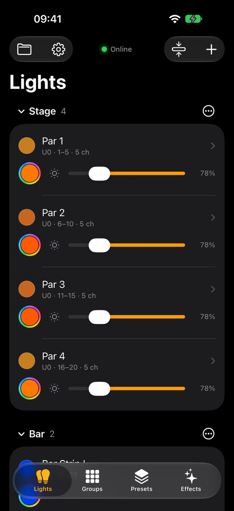
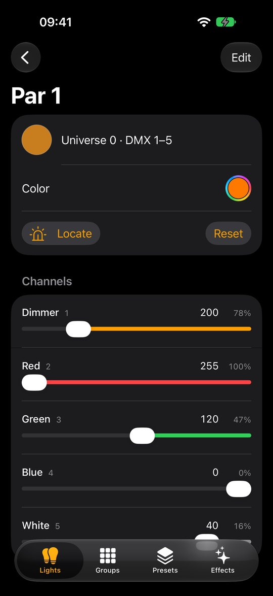
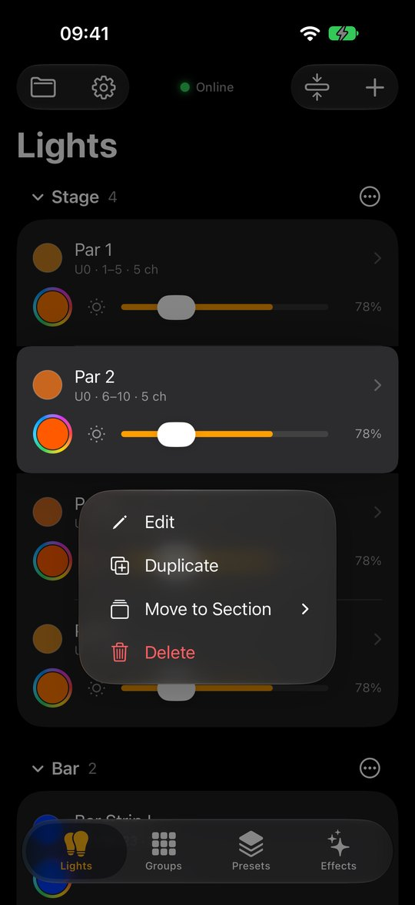
Reset puts every channel back to its default value. Delete always asks first with a red confirmation; deleting a light also removes it from groups, presets and effects.
03Color and Locate
The color window
Tap any round color button: on a light row, a group row, or a light’s screen. Drag on the wheel or tap one of the 14 swatches. The lights change while you choose.
- ✓ keeps the new color.
- X puts back the colors the lights had before you opened the window.
On a group, the color goes to every light in it that has red, green and blue channels.
Locate
Locate helps you find a light on stage. Tap Locate on a light’s or group’s screen and its lights blink full white once a second. The button turns yellow, pulses and reads Stop, and the color dots in the app blink along with the real lights.
- Locate overrides Grand Master and Blackout, so it works even when everything is dark.
- It only changes what is sent to the lights. When you stop, or leave the screen, they go back to exactly how they were.
- Only one thing blinks at a time: locating another light stops the previous one.
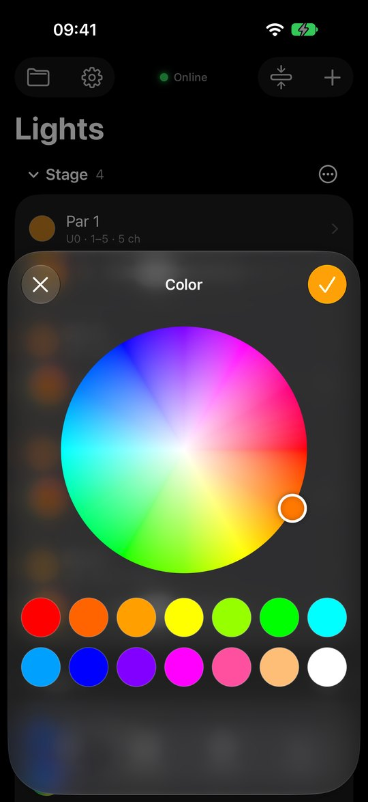
04Sections
Sections are headings on the Lights tab: a room, a side of the stage, a type of light. They only organize the list. Unlike a group, every light in a section keeps its own controls.
- Add a section: + → Add Section, then name it.
- Put a light in a section: touch and hold its name → Move to Section. The list offers every section, No Section and New Section…. You can also pick the section in the light’s editor, or use Add Light Here from a section’s menu.
- Fold a section: tap its name. The arrow shows whether it is open, and the app remembers it.
- Fold or open all: the button next to + folds every section, or opens them all when they are already folded.
- Section menu ⋯: Add Light Here, Rename, Move Up, Move Down, Delete Section. Deleting a section keeps its lights; they move to No Section.
With no sections at all, the list is grouped by universe instead.
Ordering lights
- One step at a time: touch and hold a light’s name → Move Up or Move Down moves it one place within its section.
- Drag anywhere: + → Arrange Lights (also in a light’s hold menu) lists every light with a handle. Drag a light up or down, under another section, or under No Section. Without sections, lights can be reordered within their universe.
Until you move a light, the list is sorted by universe and address. After that your order is kept and saved with the show.
05Groups
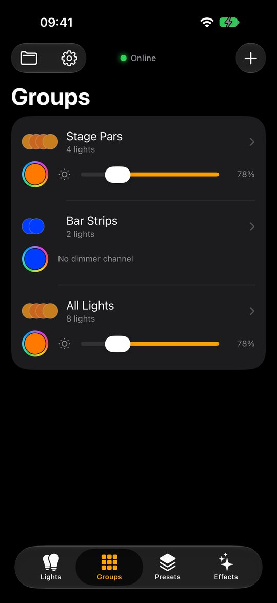
A group controls several lights together with one fader and one color button.
- Tap +, name the group and tick its lights. All and None speed this up.
- Use the row’s fader and color button to set every light in the group at once.
- Tap the group’s name for its screen: Color, Locate, Reset, one slider per attribute (dimmer, red, pan…) and the list of its lights.
- Touch and hold the name: Edit, Move Up, Move Down, Delete. Deleting a group never deletes its lights.
- The ⋯ button on a group’s screen offers Record Preset (with the group already picked) and Edit Group.
06Presets
A preset saves a whole look: the values of the lights you choose. Recalling it crossfades the lights to that look.
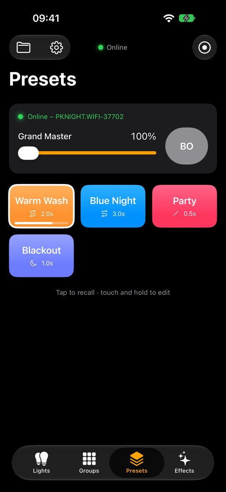
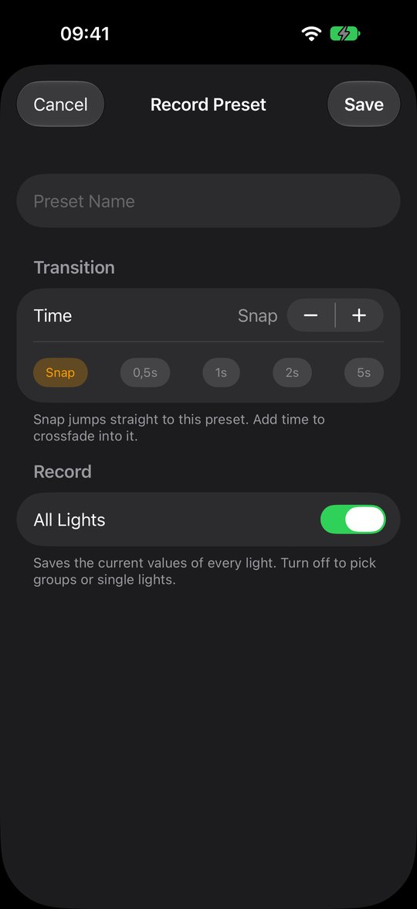
Recording a preset
- Set the lights to the look you want.
- Tap the record button ◉ at the top of the Presets tab.
- Name it and choose the Transition: Snap, 0.5 s, 1 s, 2 s, 5 s, or any time up to 60 s with the stepper.
- With a time set, pick a Style (see below).
- Leave All Lights on to record everything, or turn it off and tick any groups and single lights. Recalling the preset then only changes those lights.
- Tap Save.
| Style | How the lights cross into the preset |
|---|---|
| Linear | Constant speed from start to end. |
| Smooth | Starts and ends gently. |
| Ease In | Starts slowly, finishes fast. |
| Ease Out | Starts fast, settles slowly. |
| Dip to Black | Fades out, changes, then fades in to the new look. |
Changing presets
Touch and hold a preset for Update from Current (re-record its lights as they are now), Edit… and Delete. The editor also changes the name, transition and button color, moves the preset earlier or later in the grid, and has Recall and Update from Current Values.
Grand Master and Blackout
The panel at the top of the Presets tab scales every light’s brightness with the Grand Master fader. BO is an instant blackout; it turns red while active. Neither changes the lights’ saved values. For lights without a dimmer channel, they scale the color channels instead.
07Effects
Effects play moving patterns on any lights and groups. Like Locate, they only change what is sent to the lights: stop an effect and its lights return to how they were.
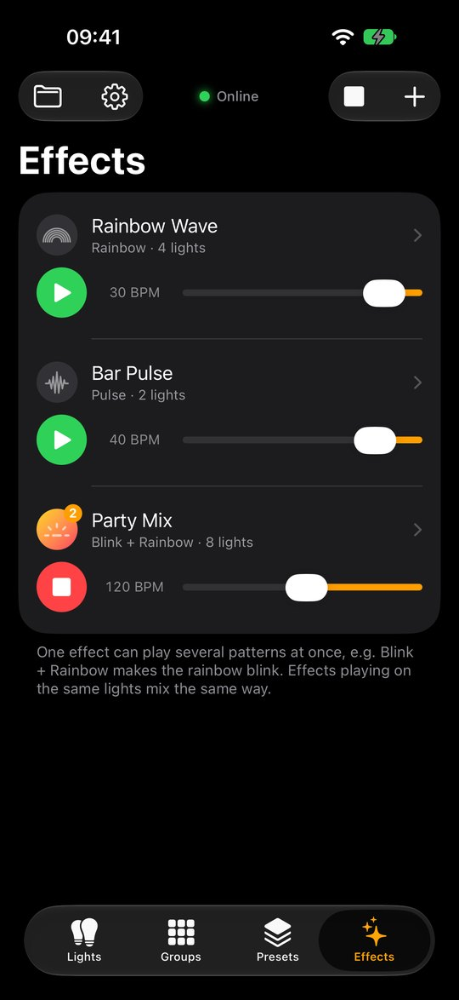
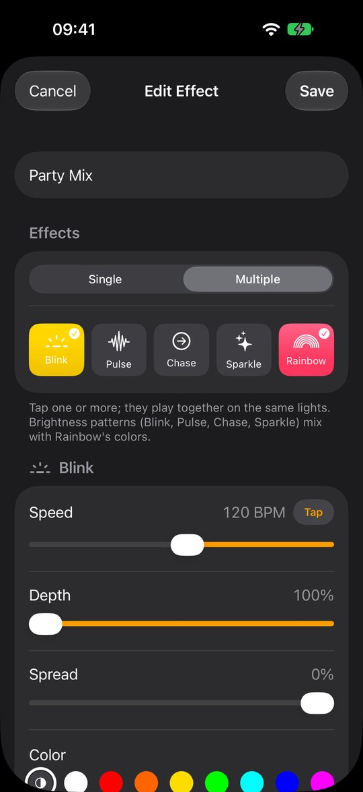
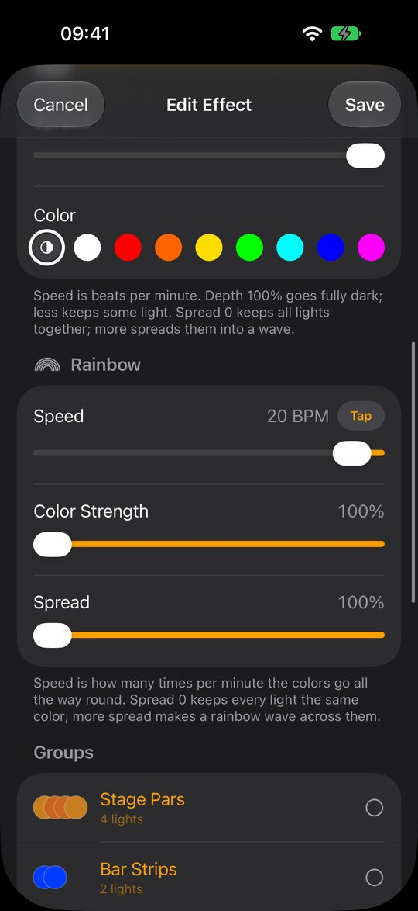
| Pattern | What it does | Sets |
|---|---|---|
| Blink | Switches the lights on and off on every beat. | Brightness |
| Pulse | Fades the lights smoothly up and down, like breathing. | Brightness |
| Chase | Lights one light after another: group lights first, then single lights in the order you ticked them. | Brightness |
| Sparkle | Flashes lights at random, about a third at a time. | Brightness |
| Rainbow | Cycles the lights through every color. | Color |
Making an effect
- Tap + on the Effects tab.
- Choose Single for one pattern, or Multiple to tick several that play together.
- Adjust each pattern:
- Speed in BPM, 10 to 240, or tap Tap in time with the music.
- Depth: how dark the low point gets. For Rainbow it is Color Strength.
- Spread: 0% keeps all lights together, 100% spreads them into a wave.
- Color (brightness patterns only): ◐ keeps each light’s own color, or pick one of eight.
- Tick the groups and lights it should play on.
Every change plays on the lights immediately while the editor is open. Save keeps it; Cancel puts the effect back exactly as it was, including stopped if it was stopped. A new effect starts playing as soon as it has a light.
Playing and mixing
- Press the green ▶ to play and the red ■ to stop. The square button at the top stops every effect at once.
- The row’s speed fader moves all of an effect’s patterns together and keeps their ratio.
- Brightness patterns and Rainbow mix: Blink + Rainbow makes the rainbow blink. Two brightness patterns multiply, so Pulse + Sparkle twinkles while it breathes.
- A brightness pattern with its own color picked replaces Rainbow’s color.
- A light that is off or black opens to full white so the effect is always visible. Grand Master and Blackout still apply.
- Effects are saved in the show but always start stopped when you open the app.
08Setup and shows
The gear button opens Setup. Changes apply as you make them.
- Art-Net Output: output on or off, the node IP, port (normally
6454), refresh rate (1 to 44 Hz, default 40) and the status. - Nodes Found: tap a node to use it. Find Node Automatically switches by itself when the node IP stops answering.
- Appearance: Dark (default) or Light. It switches instantly.
- Layout: Left-handed puts the color button and fader on the other side and reverses every fader, with 0% on the left. Names, menus and bars stay where they are.
- Current Show: name, number of lights, universes and channels used, plus Export and Import.
- Saved Shows: tap to open, swipe to delete, New Show, Duplicate Current Show.
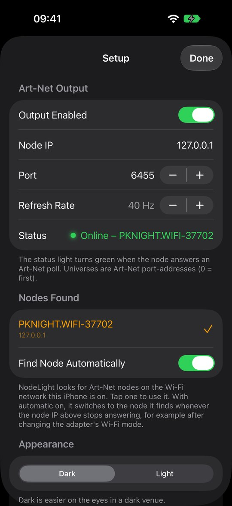
Saving and files
Your show saves itself after every change and when you leave the app. The folder button at the top left has Save, Save As…, Rename…, Open, New Show, Import File… and Export File….
Shows are plain files named after the show, for example Demo Club.json. On iPhone they are in the Files app under On My iPhone → NodeLight → Shows; on Android they stay inside the app, so use Export and Import to move them. Renaming a show renames its file, and two shows with the same name become Name.json and Name 2.json. On iPhone, if you delete a show’s file in the Files app, NodeLight notices when you return and removes it from the list.
Free and Full Version
NodeLight is free to download. The free version controls one light, with Groups, Presets, Effects, Locate and sharing all working, so you can try it with your own node. It doesn't save or open shows: when you close the app the light is gone, and only the node settings are kept. A show with more than one light can't be controlled in the free version — NodeLight then offers the Full Version or a new, empty show, and sends nothing to the lights.
The Full Version is a one-time purchase in the app (Setup → Unlock Full Version, or whenever you reach a limit). It adds unlimited lights, saving and opening shows, and Import and Export. What you built in the free version is kept as your first show. On a new phone with the same Apple or Google account, tap Restore Purchase to get it again for free.
Back up with Export. Export File shares the show file by AirDrop, Mail or Files. Import File opens a show file from anywhere, including one exported from another phone — show files are the same on iPhone and Android.
09Sharing with other phones
Several phones can run the same show together — for example one at the desk and one on stage. iPhones and Android phones work together.
- Put every phone on the same Wi-Fi network.
- Open the same show on each phone (send it with Export File and open it with Import File).
- Leave Setup → Sharing → Share with Other Phones on (it is on by default). The other phones appear in the list below it.
Every fader, color and preset change on one phone shows on the others within a tenth of a second, and Grand Master and Blackout are shared too. When two phones change the same light, the newest change wins.
- Joining a running show: a phone that opens NodeLight while another one is already running takes over the current state first, for up to 3 seconds, so the lights don’t jump.
- New lights start from the values the other phones are sending. A light’s or group’s screen has Read Current State to take them over again.
- Effects and Locate stay on the phone that starts them. Run them from one phone at a time.
- Other controllers: NodeLight also follows a lighting desk or another Art-Net app (such as StageLight) that sends DMX on the network, and takes over its state when it starts.
No node needed to try it. The phones talk to each other directly, so sharing works even before the Art-Net node is connected.
10Troubleshooting
| Problem | What to check |
|---|---|
| Status says No Reply | Is the phone on the node’s Wi-Fi? Check Setup → Nodes Found and tap the node. On iPhone, make sure Local Network access is allowed in Settings → NodeLight. |
| Green, but lights don’t react | Check the universe and start address on the light itself. Most nodes start at universe 0; if nothing reacts, try 1. Make sure the light is in DMX mode with the right channel count. |
| Wrong colors or channels | The light’s channel order differs from the type you chose. Open the light’s editor and reorder or retype the channels to match its manual. |
| Lights flicker or lag | Lower the refresh rate in Setup (for example 30 Hz) and keep the phone close to the node. |
| Node changed address | Leave Find Node Automatically on, or pick the node again under Nodes Found. |
| A light stays white and blinking | Locate is on. Tap Stop on its screen, or leave the screen. |
| Everything is dark | Check that BO is not red and the Grand Master is up. |
| Phones don’t see each other | Both phones must be on the same Wi-Fi with Share with Other Phones on. Some guest or hotel networks block phones from talking to each other; a node’s own Wi-Fi or a normal router works. |
11Quick reference
| Gesture | Where | Does |
|---|---|---|
| Tap a name | Lights, Groups | Opens its screen |
| Hold a name | Lights, Groups, Effects | Edit, Duplicate, Move, Delete |
| Hold a preset | Presets | Update from Current, Edit, Delete |
| Tap a preset | Presets | Recalls it with its fade |
| Tap a section name | Lights | Folds or opens it |
| Tap ⋯ on a section | Lights | Add Light Here, Rename, Move, Delete |
| Tap the round button | Anywhere | Color window |
| Tap Tap in rhythm | Effect editor | Sets the speed |
Protocol: Art-Net 4 · ArtDMX (OpCode 0x5000) on UDP 6454 · status by ArtPoll / ArtPollReply every 2 s · universes are Art-Net port-addresses, 0 = first.